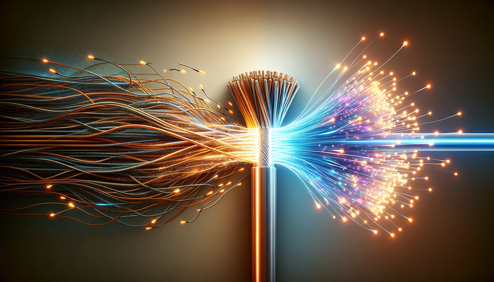
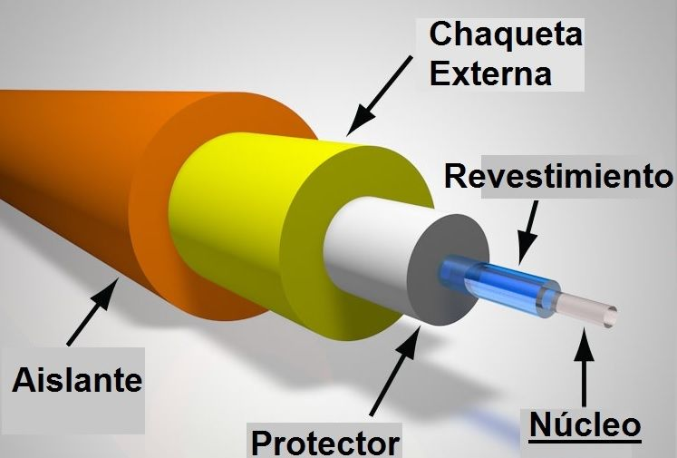
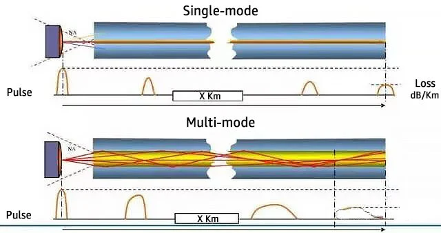
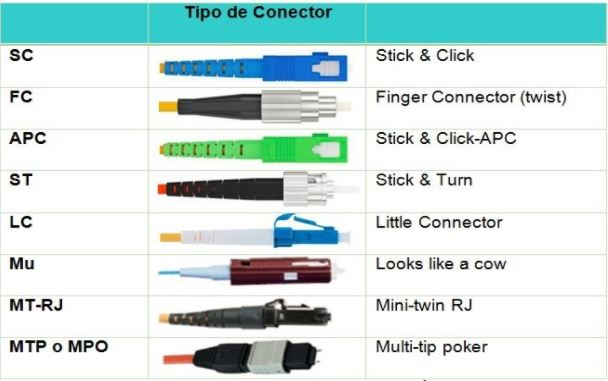
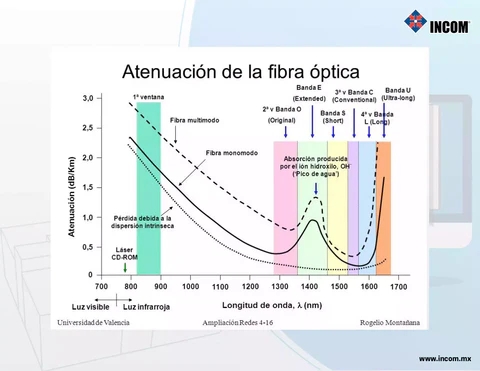
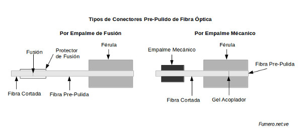
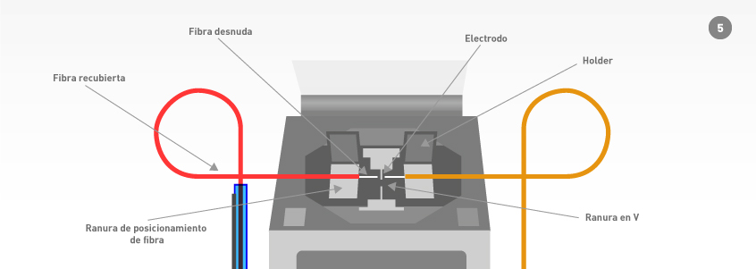
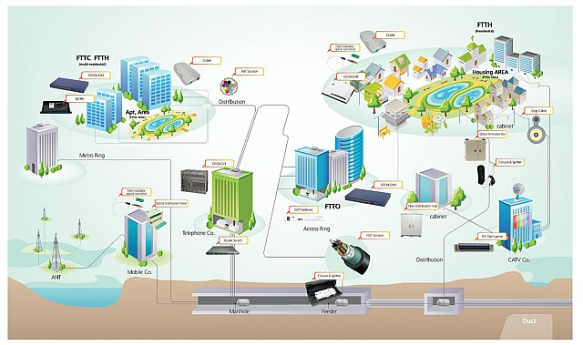

Artículos de Fibra Óptica

¿Qué es la Fibra Óptica y por qué es tan Rápida?

Los Componentes Clave de un Enlace de Fibra Óptica

Fibra Monomodo vs. Multimodo: ¿Cuál es la Diferencia?

Glosario Básico de Términos de Fibra Óptica

Entendiendo las Pérdidas en los Enlaces de Fibra Óptica

Introducción al Empalme de Fibra Óptica: Fusión vs. Mecánico

Técnicas Avanzadas de Empalme por Fusión: Optimización de Parámetros y Resolución de Problemas Comunes
